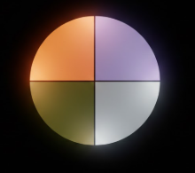
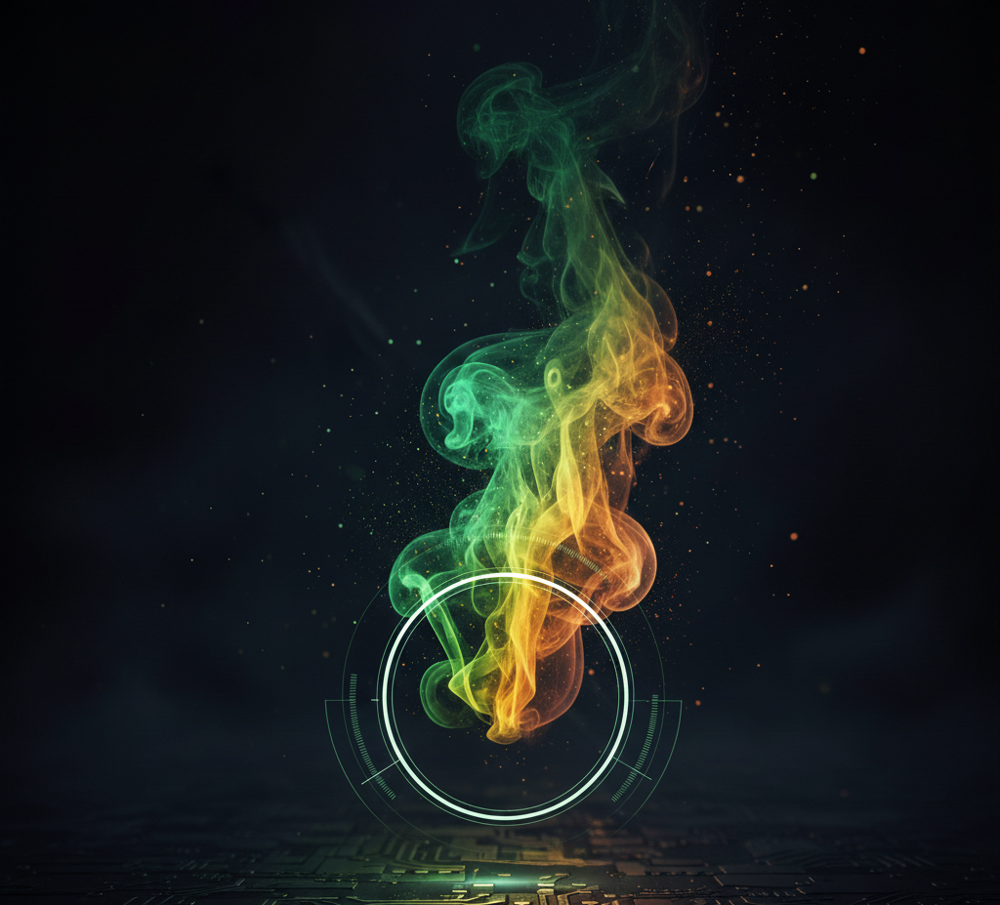

home.py
about.yaml
skills.py
projects.ipynb
papers.bib
awards.md
reviews.md
career.md
contact.sh

// hello, world
주진호
AI Researcher · Vision & Modeling
Computer Vision 분야에서 데이터 양질의 한계를 넘어서는 고성능 모델을 연구합니다. 배움을 멈추지 않는 연구자로서, 대학원 진학을 목표로 매일 성장하고 있습니다.
about
About Me
about.yaml
$ cat about.yaml
name: 주진호 (Ju Jinho)
role: AI Researcher · Vision & Modeling
status: 대학원 진학을 위해 연구에 몰두하는 4학년
education:
- 수원대학교 AI·데이터과학부 4학년
research_interests:
- Computer Vision
- Data-Efficient Learning
- Multimodal Learning
philosophy: "죽을 때까지 배우고, 끝없이 연구한다"
skills
Technical Skills
ML / Deep Learning
PyTorchTensorFlowscikit-learnXGBoostLightGBMOpenCVYOLOHugging Face
Data & Analytics
PythonRSQLPandasNumPyScipy
Visualization
MatplotlibSeabornPlotlyTableau
Tools & Infra
GitAWSDockerLinuxSeleniumFastAPI
projects
Projects
trading.png'">
TradingView Auto Crawler
주가 예측을 위해 TradingView 실시간 데이터를 Selenium 기반으로 자동 수집하는 파이프라인.
PythonSeleniumWebDriverAutomation
personal-color.png'">
AI Personal Color Diagnosis
얼굴 사진 분석으로 퍼스널 컬러 진단 후 맞춤 배경 영상 생성. AI-Develops 우수상.
PythonOpenCVDeep LearningColor Analysis
준비중
gas-detection.png'">
Multimodal Gas Leak Detection
가스 센서 데이터의 오류 문제 해결을 위해 통합 전처리 파이프라인 구축. 멀티모달 접근으로 기존 모델 대비 성능 향상.
PyTorchMultimodalDCTDWTMTF

Industrial Cable Defect Detection
산업 환경 케이블 결함 자동 탐지 비전 모델. 다양한 아키텍처 비교 실험으로 최적 성능 도출.
PyTorchComputer VisionObject Detection
준비중
publications
Publications
한국정보과학회
통합 전처리 파이프라인을 활용한 멀티모달 가스 센서 데이터셋에서의 모델 성능 비교
맹영민, 주진호, 윤재훈, 정우창
awards
Awards & Honors
2024
AI-Develops 공모전 우수상
AI 퍼스널 컬러 진단 모델
paper reviews
Paper Reviews
읽고 정리한 논문 리뷰입니다. 클릭하면 전체 리뷰를 읽을 수 있습니다.
career
Career
2021.03 — Present
AI·데이터과학부 학부생
수원대학교
Computer Vision, ML 분야 연구. 다수 프로젝트 및 공모전 참여. 대학원 진학 준비 중.
contact
Contact
contact.sh
$ cat contact.yaml
email: wlsgh20728@suwon.ac.kr
github: github.com/Wlsghdh